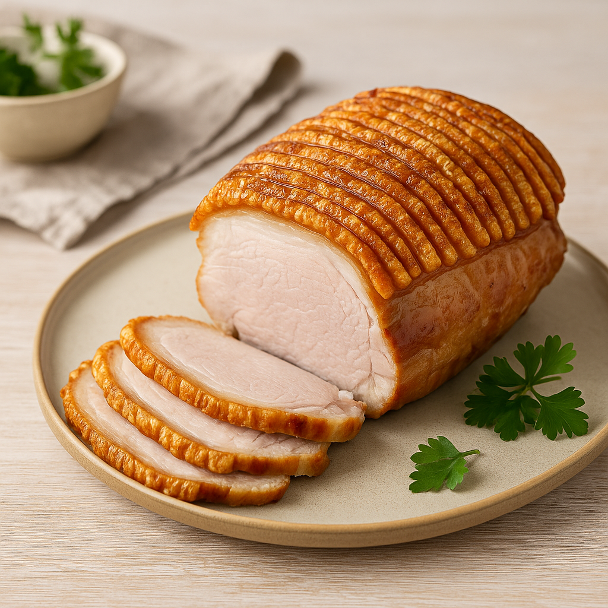

Populære temaer


Julefrokost



NY
Flæskesteg i airfryer
Flæskesteg i airfryer er en sand klassiker – perfekt sprød svær og saftig steg. Den er skabt til julefrokosten, men fungerer lige så godt som hverdagssteg.
Se opskrift →